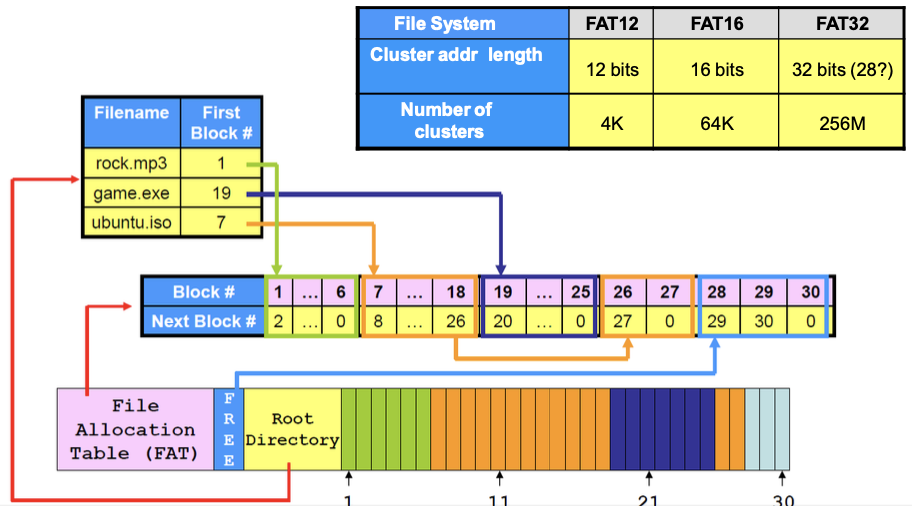

文件系统
Abstract
磁盘的 block 和文件系统的 block 不是一回事：
- 磁盘的 block ：往往是固定的 512 B；
- 文件系统的 block 是基本单位，可以自定义，不一定和磁盘的 block 大小相等。
- 文件系统分配空间的基本单位往往是页面大小 4 KB ，
文件系统结构：（自上而下分层）
- application programs，应用程序
- logical file system，逻辑文件系统
- file-organization module，文件组织模块
- basic file system，基本文件系统
- I/O control，I/O 控制
- devices，设备
Warning
修改文件要写回磁盘！计算访问磁盘次数的时候要注意写操作比读操作多 1！
数据结构¶
面向对象
FCB¶
别名：文件目录项、文件控制块
包含：
- 指向关联的 inode 的指针
- 指向父目录、子目录的指针
文件目录¶
FCB 的有序集合
inode¶
别名：索引节点、文件描述信息、index node
ext2、ext3 采用 inode 表
将 FCB 中的一部分文件描述信息分离出来，这些是检索目录时不需要的不必放在内存的，所以只将指向这部分的一个指针放在内存的目录项里。
采用 inode 可以减少查找文件时的 I/O 信息量，相当于简化了内存中的文件目录项(FCB)，将其中一部分留在磁盘，只保留指向他们的指针。例如 Linux 的文件目录项就只包含文件名和指向 indoe 的指针。
 硬连接和软链接与 inode
硬连接和软链接与 inode
- 硬链接文件指向同一个 inode
- 软链接文件指向不同的 inode，相当于不同的文件，只不过存的是路径
Warning
在文件的物理结构中，则 inode 中就存储了索引文件的主索引表。
直接以数组方式存储的 indoe 表，相当于单级索引；也可以有多级索引。
- 磁盘索引节点，每个文件唯一都有一个
- 文件主标识符
- 文件类型
- 文件存取权限
- 文件物理地址
- 文件长度
- 文件链接计数
-
count，实现硬链接文件共享，表示链接到本索引节点的用户目录项的数量。只有count=0的时候才能删除文件。
- 文件存取时间
- 内存索引节点，文件被打开时，磁盘索引节点复制放在内存的副本
- 索引节点号，用于标识内存索引节点
- 状态，是否被上锁
- 访问计数，为 0 时文件关闭
- 逻辑设备号
- 链接指针，指向空闲列表或散列队列
打开文件表¶
本质上是实现只需要一次访问磁盘定位文件在磁盘的位置，将其存储到内存，后续在内存可以找到文件在磁盘的位置。
两级表：
- 整个系统一个表，包含与进程无关的信息，每一个文件条目包含：
- 文件描述符(File Descriptor, FD)
- 这是 Linux 中的名字，Windows 中也叫文件句柄
- 文件打开次数
- 变为 0 之后就可以“关闭文件”，从表中删除该项
- 文件磁盘位置
- 访问日期
- 文件大小
- 每个进程有一个表，包含与进程有关的信息，每一个文件条目包含：
- 读写指针
- 访问权限
- 指向系统打开文件表的对应文件条目指针
 系统只会在第一次打开一个文件的时候使用其文件名在磁盘上定位，然后在内存中创建文件表中的条目，此后就不再需要文件名。
系统只会在第一次打开一个文件的时候使用其文件名在磁盘上定位，然后在内存中创建文件表中的条目，此后就不再需要文件名。
open 系统调用由用户调用，一个文件可能对某一用户是第一次打开，但是对系统而言不是第一次，只会在用户进程的打开文件表增加条目。
文件保护¶
- 口令保护
- 加密保护
- 访问控制
文件访问控制表¶
可能也有叫做存取控制矩阵之类的 (?)
为每个文件和目录设置一个文件访问控制表。用来管理不同用户、用户组对该文件或目录的访问权限
文件结构¶
文件逻辑结构¶
文件访问、存取，或者文件中查找数据的方式，是由文件的逻辑结构决定的。
文件的逻辑结构分为：
- 无结构文件，也叫做流式文件，对该类型文件中记录的访问只能通过穷举搜索。
- 有结构文件，也叫做记录式文件，这里讨论的都是这种，这样的文件是由一个以上的记录构成的。
- 定长记录
- 变长记录
顺序¶
每次读写大批量数据时，顺序文件的效率是最高的。
直接¶
直接文件也叫做散列文件、哈希文件。
- 优点
- 存取速度快
索引¶
建立一张索引表，索引表本身是定长记录的顺序文件，其中的每一个索引表项包含：指向记录的指针、记录的长度
- 优点
- 提升了查找速度
- 缺点
- 索引表增加了存储空间
索引顺序¶
在索引文件的基础上，索引表项指向的单个记录变为一组记录组成的顺序表，就得到了一级索引的索引顺序文件。
优缺点和索引文件仍然一样...
记录成组分解¶
记录成组分解技术是指若干逻辑记录存入一个块，一个逻辑记录不能跨越 2 个块。
搭配隐式链接，每个个块存储固定长度的若干逻辑记录，剩余的字节用于存储指向下一个块的指针。
文件物理结构¶
连续分配¶
配合使用空闲表法管理空闲磁盘空间。
进程访问磁盘时所需的寻道数和寻道时间最小

磁带只能使用连续分配，只能顺序存取！
扩展连续分配¶
例如：ext4、ext3
FCB 中比连续分配多增加一项为指向下一个扩展块的指针
链接分配(隐式链接)¶
每一个块包含该文件指向下一个块的指针，这些指针对用户来说是透明的，空指针表示文件末尾。
-
优点：
-
不会产生外部碎片，提高了磁盘利用率。
-
缺点：
-
只支持顺序访问，随机访问效率低
-
稳定性可靠性低，链指针“断掉”就会导文件数据丢失
-
指向下一个盘块的指针消耗了磁盘空间

显式链接(FAT)¶
用于链接文件各个物理块的指针显式地存放在内存地一张唯一的链接表中，称为文件分配表(Fils Alloction Table, FAT)，每个表项存放指向下一个块的指针。
FAT 本身就可以实现空闲磁盘块管理，若磁盘块空闲，则其表项可标记为 -1 等
FAT 在系统启动时被读入内存，检索记录都在内存中进行。
-
优点：
-
支持顺序访问和随机访问（磁盘，不是 FAT）
-
检索在内存中完成，速度快效率高，减少了磁盘访问次数
-
缺点：
-
FAT 表需要占用一定的内存空间

以“簇”(cluster)为单位分配，cluster 0 和 1 保留，从 2 开始计数
LFN 目录项
索引分配¶
建立一张索引表
- 优点：
- 支持直接访问，索引表的第
i个条目指向的就是第i个块 - 不会产生外部碎片，提高了磁盘利用率。
- 缺点：
- 索引块增加了额外磁盘存储开销

可以分为：
- 单级索引
- 局限：
- 只适用于小文件
- 多级索引
- 通过主索引查找二级索引......
- 优点：
- 极大加快了对大型文件的查找速度
- 问题：
- 对小文件来说没必要使用深层级的索引，会造成磁盘存储浪费和访问开销增大
- 混合索引

UNIX 采用最深为三级的混合索引
目录¶
目录逻辑结构¶
单级目录¶
实现了按名存取，每个文件名对应唯一一个文件。
缺点：
- 文件不允许重名
- 不方便文件共享
两级目录¶
- 主文件目录 Maste File Directory (MFD)
- 用户文件目录 User File Directory (UFD)
- 用户文件目录 User File Directory (UFD)
- 用户文件目录 User File Directory (UFD)
- ......
解决了多用户之间文件重名的问题。
树形目录¶
理论上可以实现无限深度的目录层次。
出现了相对路径和绝对路径的概念。
无环图目录¶
比树形目录多了共享子目录，实现了文件、目录共享。
一个文件可以有多个路径，称为别名。例如：
- Linux 中的软链接、硬链接
- Windows 的快捷方式
通用图目录¶
允许了环的出现，实现了自引用的特殊需求。
目录物理实现¶
目录第物理实现决定了目录检索的方式，包括 2 中检索方式：
- 顺序检索
- 散列法 / 哈希表
线性列表¶
查找比较费时。
哈希表¶
- 优点：
- 查找非常迅速
- 插入、删除比较简单
- 缺点：
- 会有冲突，链式处理溢出。
空闲空间管理¶
空闲表¶
属于连续分配方式，建立一张空闲表，和连续分配方式的目录类似，每一个表项记录一个空闲盘区，包括第一个空闲盘块号和空闲盘块数。
空闲盘区分配与回收与内存动态分配、回收类似。
空闲链表¶
free-space list
- 空闲盘块链
- 以盘块为单位拉成一条链
- 优点：回收分配过程简单
- 缺点：简单但是需要重复多次效率低，且盘块链会很长
- 空闲盘区链
- 以盘区为单位拉成一条链
- 优点：分配回收效率高
- 缺点：回收分配过程复杂
位(示)图¶
bit vector or bit map，似乎也叫空闲向量表
- 优点：
- 容易找到一个或一组连续的空闲磁盘块
- 位示图小，可以放在内存中，节省访问磁盘的开销
- 缺点：
- 位示图大小随磁盘容量增大而增大，因而常用于小型计算机
Space Maps¶
位示图的改进，将磁盘设备分为 metaslab 的单位，每一个 metslab 内对空闲盘块计数
成组链接¶
grouping
UNIX 采用该方法
第一组空闲盘块总数和空闲盘块号称为空闲盘块号栈
超级块¶
super block
包含：
- 空闲向量表 / 位(示)图 / 空闲盘块号栈
- 卷中目录区、文件区的划分信息
一般放在卷头位置，超级块要预先读入内存才能对该卷文件操作，并且经常保持内存与磁盘超级块的一致性。
缓存
- page cache，为用户程序服务（用户程序以页的方式访问）
- disk block cache，为操作系统管理文件服务
A unified buffer cache uses the same page cache to cache both memory-mapped pages and ordinary file system I/O to avoid double caching
But which caches get priority, and what replacement algorithms to use?
Linux VFS 对象：
- 超级块
- 索引节点
- 目录项
- 文件